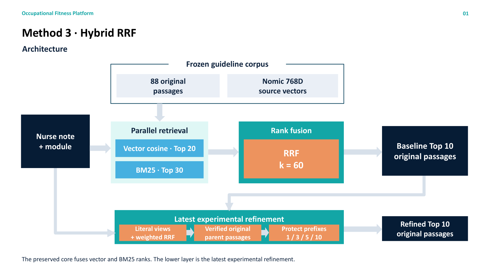
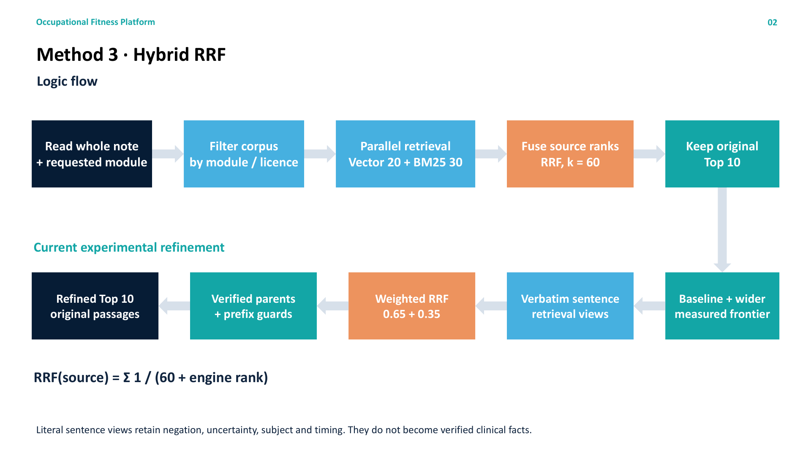
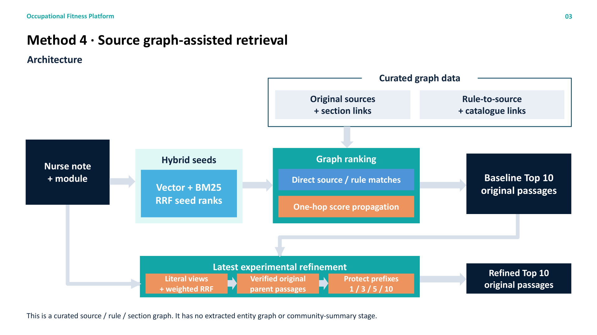
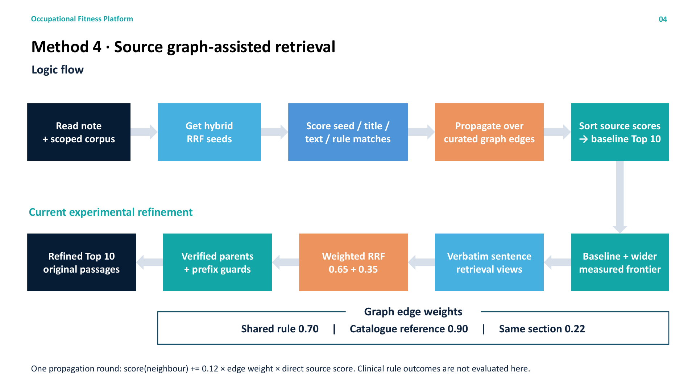
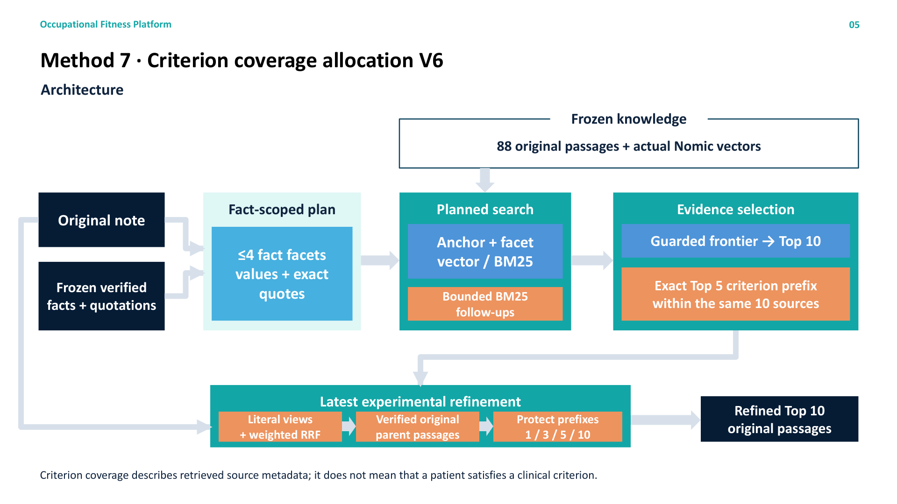
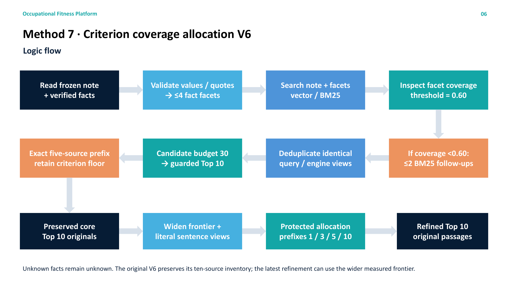
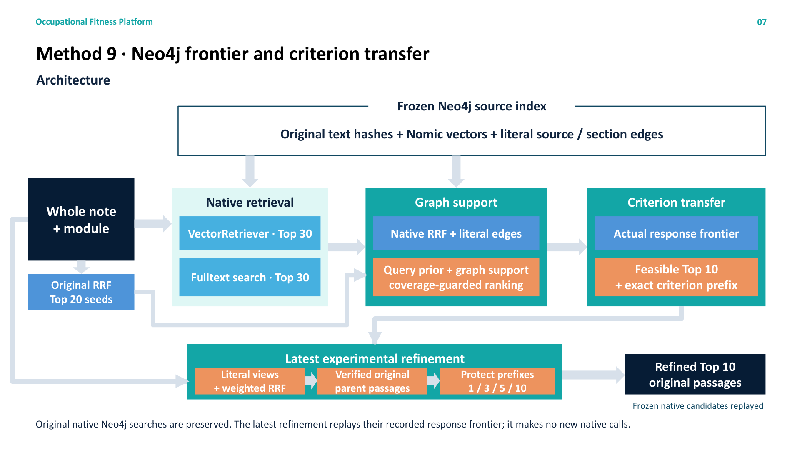
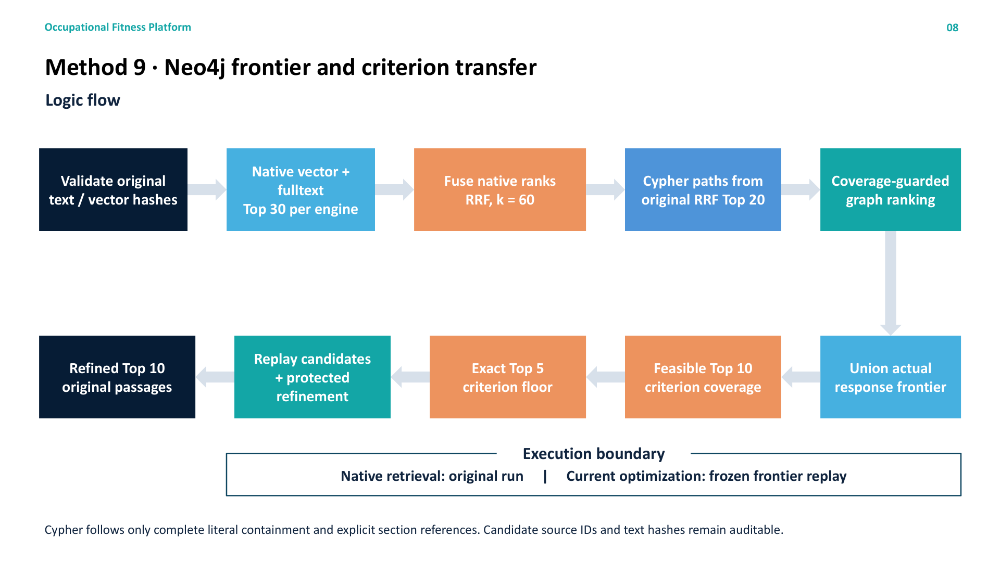
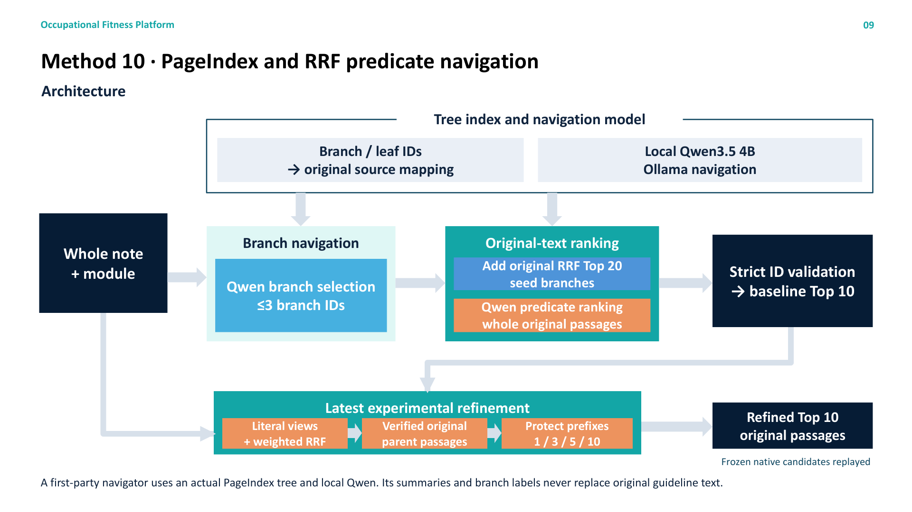
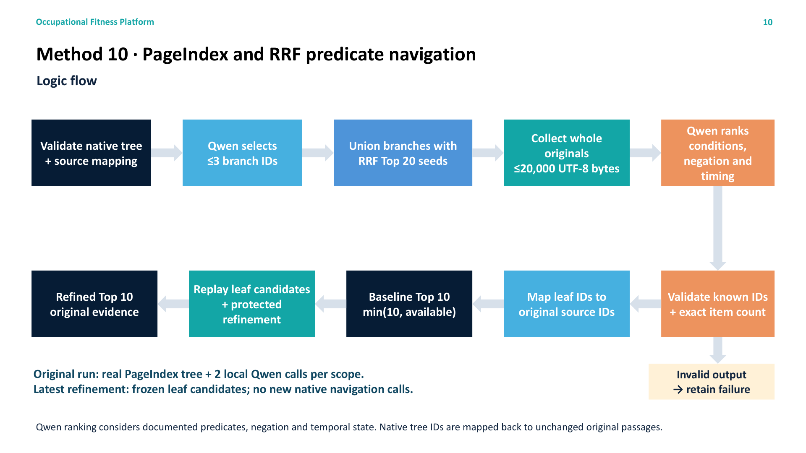

Architecture


Methods 3, 4, 7, 9 and 10. Each method has an architecture diagram and a logic-flow diagram. The preserved core and latest experimental refinement are identified separately.









